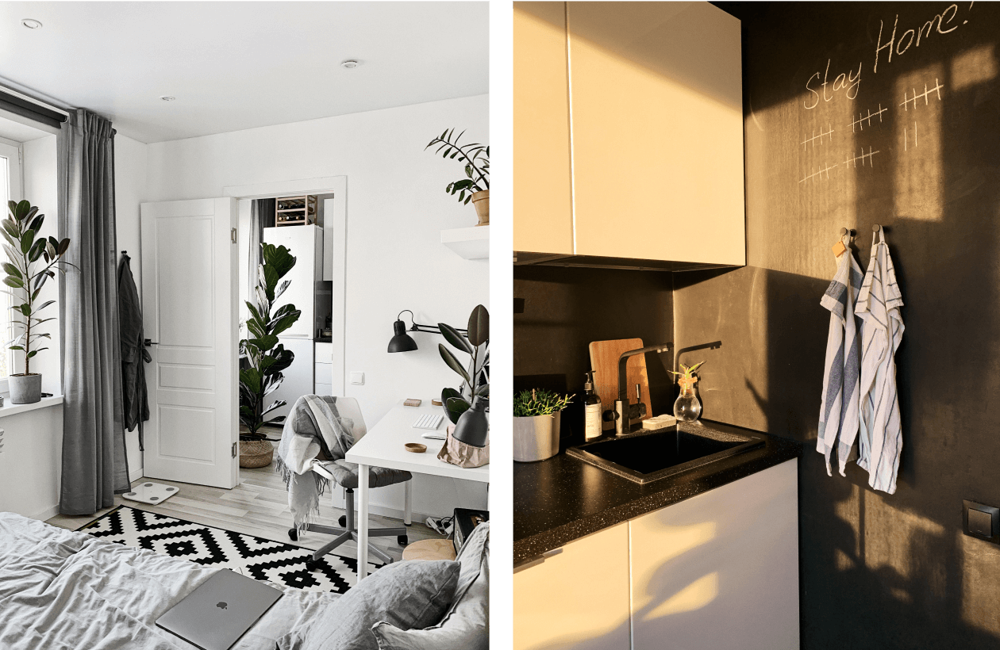
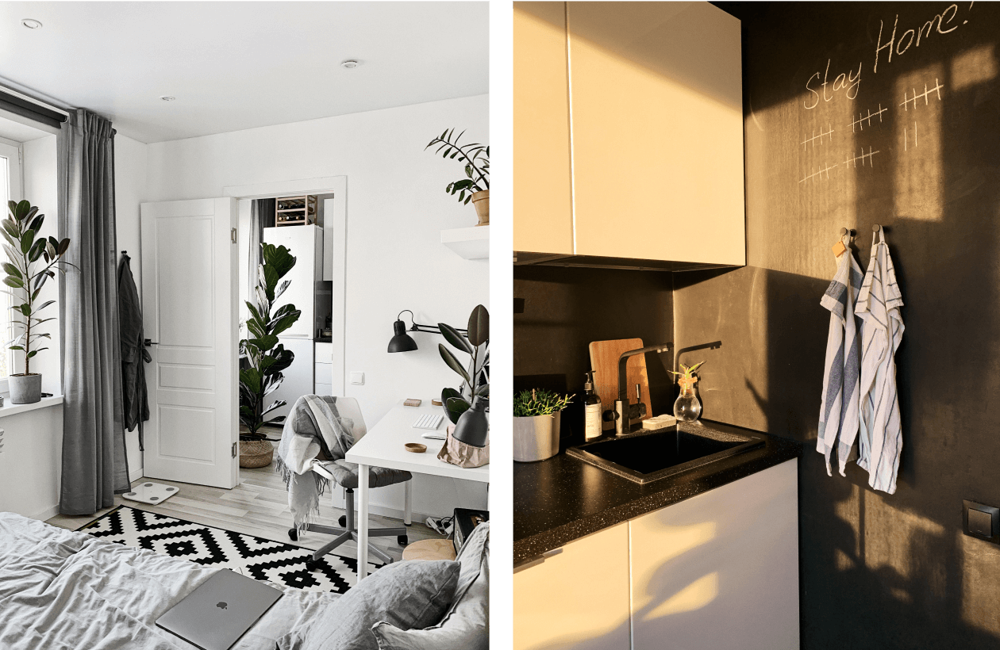

Alex DyakovInterview
What led you into design?
The design has always been part of my life. I’ve always liked making things. When I was young, I remember how my father was fixing electronics. For me, it looked like a miracle. I spend my evenings unwinding with magazines of technology.
Then in my teenage years, I was seated after school for programming and learning something new. I understood a no-brainer rule. If you are creating something new, how it works is very important. But no less important is how it looks. I was more and more interested in designing things, like making an interface.
I got really into photoshop for creating phone skins, websites, concepts of my interfaces. It is such a passion to improve things you can see and touch. Then this passion became my first job in 2010.
What does a typical day look like?
I am an early morning person. Typically, in the summertime, it starts at around 6 am. Every morning, I make black tea, water my plants, take a shower, read the news, check my to-do list. Then on my way to work, I like to listen to podcasts or interviews with great people.
I start a workday by reviewing my tasks. I collaborate very closely with our product and engineering teams. I usually have several meetings every day to talk shop and our processes and planning. I so love diving in pixels on the work for the rest time. A good day for me is the day I did something better.
When I finish work, I spend my evenings at home reading and watching.
What’s your workstation setup?
I am working on my iMac 2017 5k and Macbook Air M1 at home. At work, I have Macbook Pro 15 2019 and Dell P2715Q.


Where do you go to get inspired?
I can get inspiration from everything surrounding me. I do love nature. I take it from anywhere. It would be materials, architects, interiors. I am so lucky to be able to find beauty in simple things.
I love to travel to different cities and countries. I am going outside for a walk with my thoughts, looking at nature or architecture. I like to observe new things that I have not seen before. I particularly love to think about how people solve problems and use design solutions for everyday routine things. I am a big fan of Swedish and Japanese interior design and architecture.
Also, I love Dribbble, Pinterest, Instagram where I try to find inspiration every day. I like taking the time to look at great products from tech companies, startups, and agencies.
What product have you recently seen that made you think this is great design?
Taccia lamp. It is a floor lamp designed by Achille and Pier Giacomo Castiglioni in 1962 in Italy. For me, it is an example of timeless design.
What pieces of work are you most proud of?
It is not an easy question. I have always been a part of great teams. I am proud of when products I have designed people are using every day.
Also, I do like self-projects. In 2018, I created an icon set named Stockholm. I am so happy and proud that many people use this set in their different projects.

One of my favorite projects was the Appearance Figma Plugin. I developed this plugin to help to create a dark theme in seconds. This solution uses by thousands of designers around the world.

My apartment. I was working so hard on a design and conception. Almost all renovation I did myself. I am very proud of how coziness it is right now.
 

What design challenges do you face at your company?
Maps is a complex application. We are working on all people scenarios used every day, like searching on the map and navigating. So we need to make sure our work is high level. For me, the design challenge is to create a product that solves the needs of all our users in one application. We have a big team working on many different types of challenges.
Any advice for ambitious designers?
Enjoy what you are doing every day. A product designer career is more about engineering than art, remember it. Iterate until you are sure this is it.
Be very curious and flexible in your thinking. Try and learn new things, move out of your comfort zone. Find out what makes you excited and run for your passion. Do work you love.